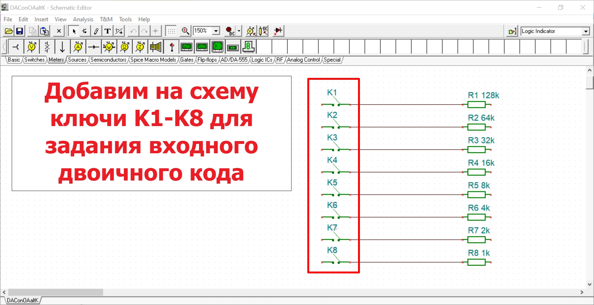
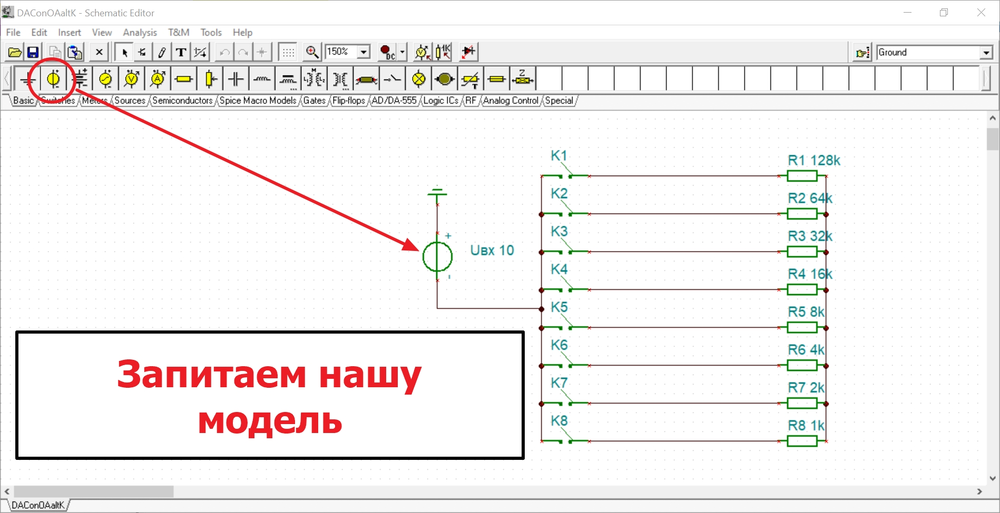
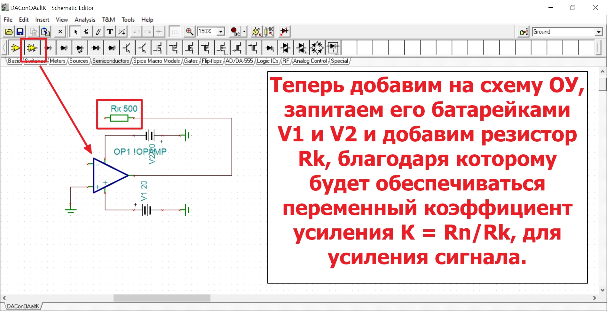
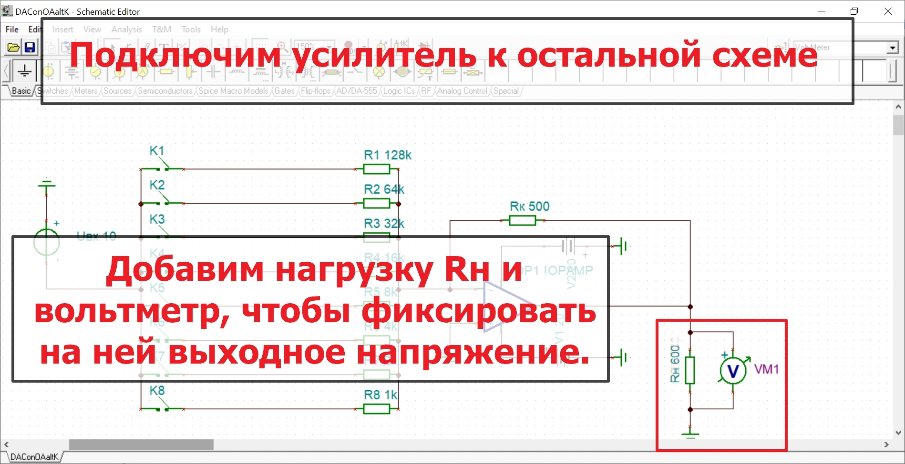
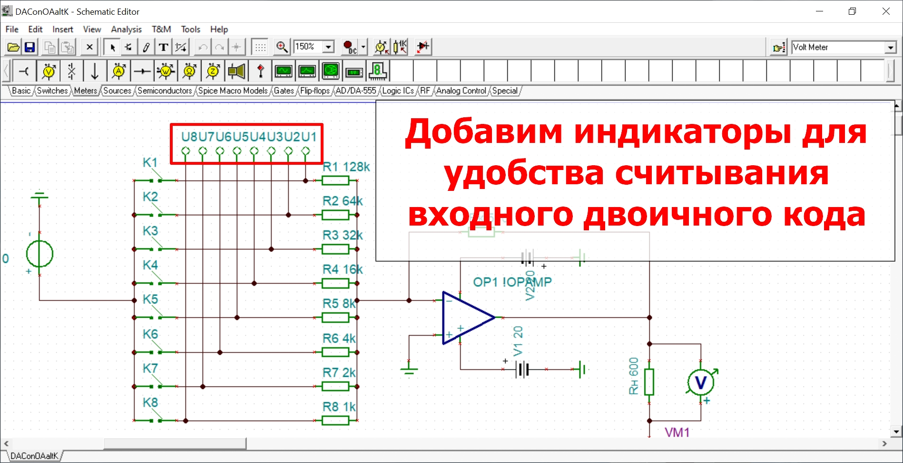
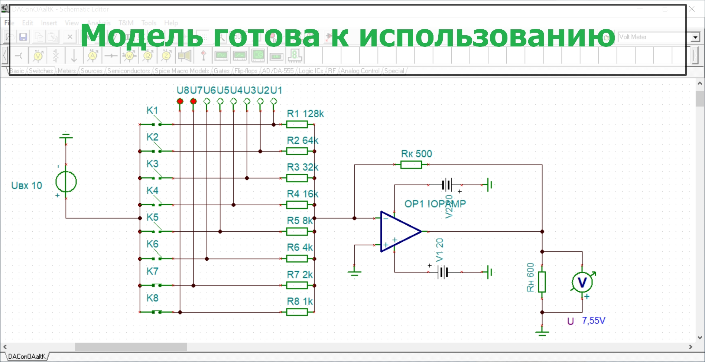

Решение задачи №3
для выполнения этой задачи нам потребовалось, используя программу TINA, предпринять следующие действия:








для выполнения этой задачи нам потребовалось, используя программу TINA, предпринять следующие действия: